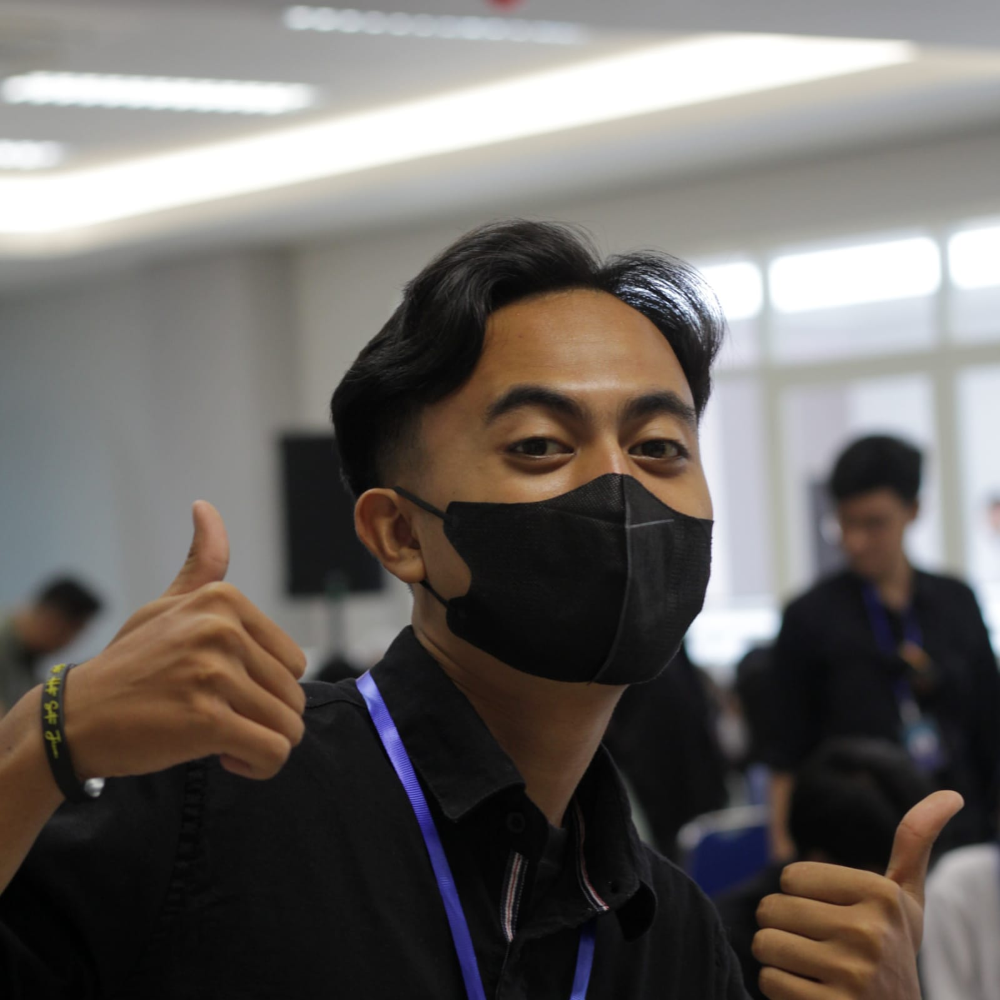

Hello my name is
Achmad Galih Wicaksana Putra
Welcome to my website!
About Me
Halo semuanya!
Perkenalkan namaku Achmad Galih Wicaksana Putra. Teman-temanku biasa memanggilku Galih. Aku berasal dari Malang dan lahir pada tanggal 9 Mei 2003. Sekarang aku sedang menuntut ilmu di Universitas Brawijaya, tepatnya Fakultas Ilmu Komputer program studi Teknik Informatika. Menjadi Front-End Developer menurutku sangat menantang karena kita harus paham tentang HTML, CSS, dan masih banyak lagi. Selain itu, kita juga harus memikirkan desain agar tampilan website yang indah dan tidak membosankan. Dengan mengikuti I-Project dari Festifora ini, aku berharap dapat menambah ilmu terkait Front-End dan juga dapat mengimplementasikannya di kemudian hari.
Terima kasih.
